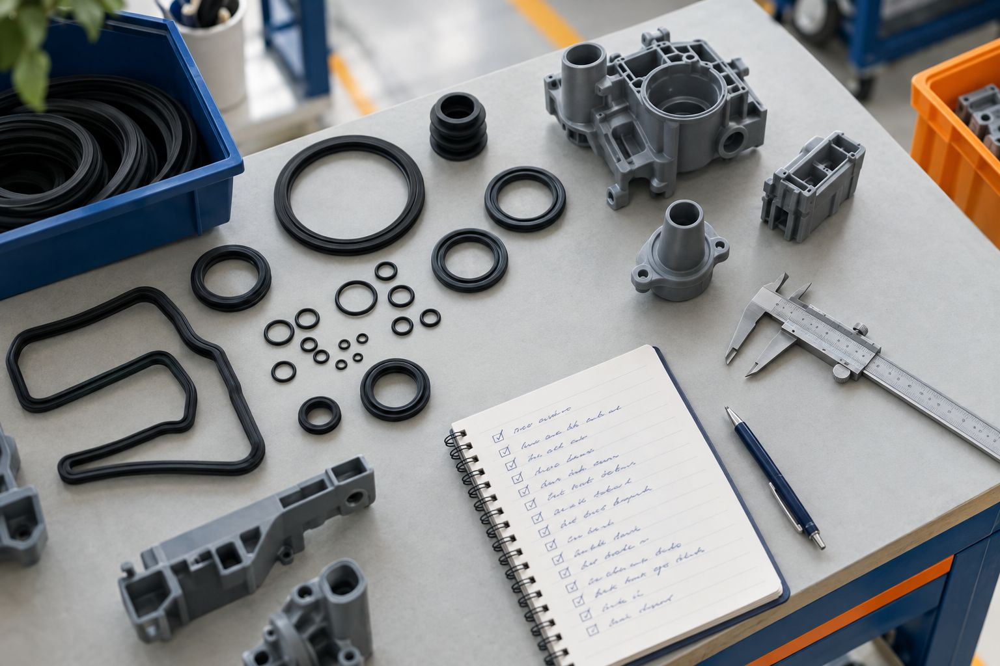

Présentation à l’attention du groupe Sacred · Novembre 2026
Vella Partners × Sacred
Le savoir-faire élastomère,
au service de la décision.
VP Expert
Diagnostic guidé des défauts et mémoire d’atelier partagée — une démarche à étudier avec les équipes Sacred, de Saint-Lubin-des-Joncherets à l’ensemble des sites du groupe.
EPDMSiliconeInjection caoutchoucMulti-sites

PIÈCES TECHNIQUES ÉLASTOMÈRES · ILLUSTRATION
Vella Partners / Document de discussion — Diffusion restreinte01 / 06
01 / Qui est Vella Partners ?
Conseil et logiciel industriel · fondée à Lyon en 2026
Des experts d’atelier, un logiciel sans boîte noire,
un accompagnement jugé sur preuves.
Vella Partners réunit un fondateur issu de vingt ans de sociétés de services et de conseil, et des experts métier de la plasturgie et du caoutchouc qui ont dirigé des ateliers d’injection pendant une trentaine d’années.
Le savoir métier
Référentiels de défauts, ordre des contrôles, gestes du régleur : écrits avec nos experts, relus pour chaque procédé.
Le logiciel
VP Expert, VP Scan et VP Predict : règles explicites et sourcées, vos données restent chez vous.
L’accompagnement
Un pilote court, une date de décision fixée au départ, un gain mesuré depuis votre point de départ.
01OBSERVERDéfauts et signaux
02COMPRENDRECauses à vérifier
03AGIRDécision humaine
04CONSERVERMémoire d’atelier
L’équipe et les expertises associées
F
FRÉDÉRIC VELLADirection et développement
H
HENRI BERNARDMéthodes et qualité
S
SYLVAIN KOMMERInjection caoutchouc
C
CHRISTOPHE PLETTYInjection thermoplastique
L
LOUIS DUQUENNOYUX et sécurisation numérique
Vella Partners / Document de discussion — Diffusion restreinte02 / 06
02 / Ce que nous avons compris de Sacred
Un spécialiste des élastomères techniques, depuis 1946
Huit sites, deux matériaux exigeants,
un même savoir-faire à faire circuler.
1946
Année de fondation ; siège et R&D à Saint-Lubin-des-Joncherets (28)
8 sites
de production : 4 en France, 4 à l’international
≈ 540
collaborateurs (« plus de 500 » selon le groupe)
≈ 70 M€
de chiffre d’affaires (67 M€ en 2023)
Savoir-faire et marchés
- Conception et production de pièces en EPDM et silicone, y compris covulcanisation et collage des deux matériaux
- Automobile (constructeurs et équipementiers de rang 1), ferroviaire, transport routier
- Petites et moyennes séries techniques via la filiale Gouillardon Gaudry
Implantations
Saint-Lubin-des-Joncherets (28)
Wuhan (Chine)
Vieux-Thann (68)
Aguascalientes (Mexique)
Bert (03)
Casablanca (Maroc)
Corbas (69)
Făgăraș (Roumanie)
Ce que cela implique pour l’atelier
- Un même défaut peut apparaître sur plusieurs sites, sur plusieurs continents
- Le savoir des régleurs expérimentés doit survivre aux départs
- Les exigences automobiles imposent de tracer chaque décision
Sources publiques (site sacredgroup.com, Club ETI Centre-Val de Loire, Ecozoom, presse régionale) — chiffres et périmètre à confirmer avec Sacred. Enjeux formulés comme hypothèses de travail.
Vella Partners / Document de discussion — Diffusion restreinte03 / 06
Une question, un outil
VP Expert au centre ; VP Scan pour prioriser,
VP Predict pour anticiper.
Pour prioriser · Chiffrer
VP Scan
« Quelles pertes traiter en premier ? »
- Intervention courte sur site, aucun matériel
- Arrêts, rebuts et retouches chiffrés en euros, machine par machine
- Feuille de route qui vous reste acquise, même sans suite
Forfait · un site, un atelier ciblé · facultatif
Le cœur · Résoudre
VP Expert
« Que faire face à ce défaut ? »
- À chaque étape, le contrôle qui départage le mieux les pistes restantes, avec sa raison
- Adapté au défaut, au moule, au mélange et à la presse
- Constat ≠ cause démontrée ; retour au réglage d’origine si l’essai échoue
- Chaque essai tracé, échecs compris : une mémoire qui ressert au prochain cas comparable
Toutes presses, connectées ou non · pilote puis abonnement par site
En extension · Anticiper
VP Predict
« Qu’est-ce qui commence à dériver ? »
- Chaque mesure de cycle face à sa référence
- L’alerte nomme la mesure, la règle et la valeur
- Puis les contrôles VP Expert, dans l’ordre
Euromap 77 / 63 ou MES · 1 à 3 presses critiques
Toutes marques, connectées ou non
Décisions prises par vos équipes
Vos données restent les vôtres
Règles explicites, pas de boîte noire
Vella Partners / Document de discussion — Diffusion restreinte04 / 06
04 / VP Expert en situation
Exemple illustratif — injection caoutchouc EPDM
Face à un défaut : une enquête métier structurée,
pas un réglage automatique.
Dossier en cours
Manque matière
Presse 4 · Moule M-212 · EPDM lot 2318
1 · Évents et dégazageConstat
2 · Température des plateauxEssai
3 · Pesée de l’ébaucheÀ venir
Encrassement sur deux évents : un constat, pas encore une cause. Cas fictif, non représentatif d’une pièce Sacred.
1
QUALIFIERRéférence, lot de mélange, données labo (rhéomètre, viscosité) disponibles.2
VÉRIFIERTempérature réelle matière / moule ; conformité des réglages au dossier.3
INVESTIGUERÉtat de l’unité, du moule, des canaux, évents ou tirage de vide.4
TRACER & VALIDEREssais autorisés, résultat constaté, solution validée par méthodes / qualité.
1ContextePièce · mélange · moule · presse
2DéfautQuoi, quand, conditions
3HypothèsesPistes et sources
4EssaisRéussis ou non
5ConclusionValidée par le client
Disponible pour démonstration
Référentiel caoutchouc construit avec nos experts : manque matière, grillage, bulles / cloques. Démo ouverte, sans inscription.
À construire avec Sacred
Défauts propres au silicone et à la covulcanisation EPDM / silicone ; partage des résolutions validées entre sites.
Vella Partners / Document de discussion — Diffusion restreinte05 / 06
05 / Pilote et prochaine étape
Commencer petit, décider sur preuves
Un pilote sur un site,
une mémoire pensée pour le groupe.
Le pilote VP Expert
1 atelier · 1 à 3 presses · 1 à 2 défauts récurrents · 6 à 8 semaines.
Date de décision fixée au départ ; usage, délai de résolution et gains mesurés.
Notre engagement
Abonnement proposé seulement si le gain brut mesuré vaut au moins deux fois son prix annuel. Objectifs prudents, gains jamais comptés deux fois.
Régleur
utilise l’outil face au défaut
Méthodes / qualité
valident la mémoire
Décideur
juge le résultat économique
Proposition de rencontre
01Comprendre l’existant SacredDéfauts qui coûtent le plus, pratiques par site, outils qualité en place.
02Présenter VP ExpertDémonstration sur cas caoutchouc et limites actuelles du référentiel.
03Choisir le site piloteAtelier, presses et défauts cibles ; option VP Scan si les priorités sont à établir.
04Préparer le déploiementSi le pilote est concluant : autres sites, mémoire partagée, VP Predict sur presses connectables.
FRÉDÉRIC VELLA · Président — Vella Partners
fvella@vella-partners.com · +33 6 22 15 43 62 · chjbcrgyn8-del.github.io/vp-simulateur
Vella Partners / Document de discussion — Diffusion restreinte06 / 06